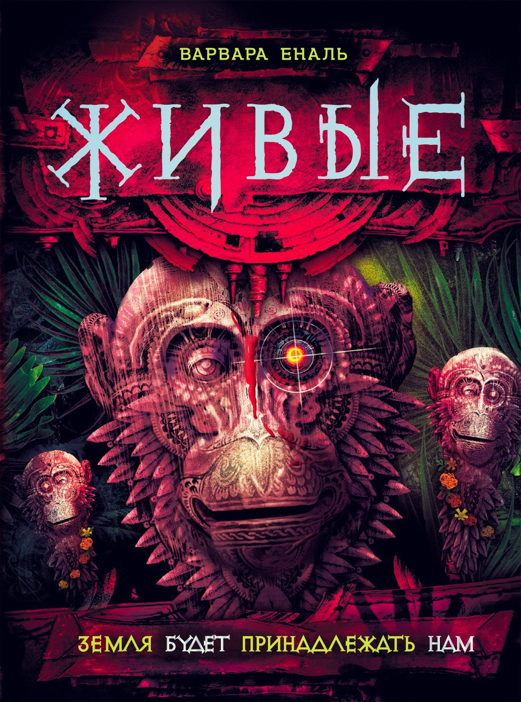

Книга "Живые: Земля будет пренадлежать нам"

Пути героев саги разошлись: Таис с Федором живут на Земле, а Эмма стала членом команды космических миротворцев. Повзрослевшие подростки обрели новых друзей и встретили новых врагов. И везде - и на Земле, и в космосе - им приходится сражаться с роботами. Сами роботы считают себя новой расой, пришедшей на смену человечеству. Удастся ли детям со станции Моаг вновь встретиться и сбудутся ли слова, которые Федор повторяет про себя как клятву: "Земля будет принадлежать нам"?